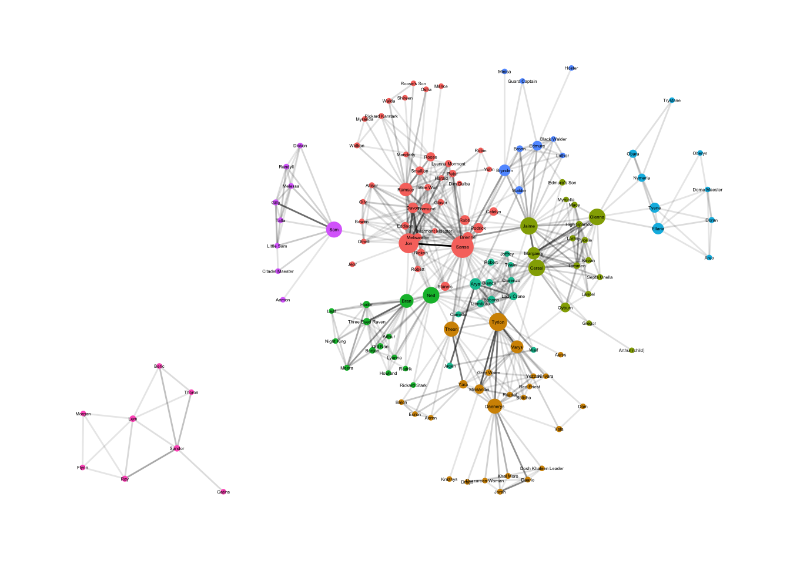

library(tidygraph)
library(ggraph)
library(igraph)
library(tidyverse)Game of Thrones Season 6 Network Analysis
Load datasets
got_s6_edges <- read_csv("data/got-s6-edges.csv")
got_s6_nodes <- read_csv("data/got-s6-nodes.csv")Examine the structure
str(got_s6_edges)spec_tbl_df [542 × 4] (S3: spec_tbl_df/tbl_df/tbl/data.frame)
$ Source: chr [1:542] "JON" "MISSANDEI" "TYRION" "ARYA" ...
$ Target: chr [1:542] "SANSA" "TYRION" "VARYS" "JAQEN" ...
$ Weight: num [1:542] 151 88 86 83 82 81 80 80 76 76 ...
$ Season: num [1:542] 6 6 6 6 6 6 6 6 6 6 ...
- attr(*, "spec")=
.. cols(
.. Source = col_character(),
.. Target = col_character(),
.. Weight = col_double(),
.. Season = col_double()
.. )
- attr(*, "problems")=<externalptr> str(got_s6_nodes)spec_tbl_df [142 × 2] (S3: spec_tbl_df/tbl_df/tbl/data.frame)
$ Id : chr [1:142] "AERON" "AERYS" "ALLISER_THORNE" "AREO" ...
$ Label: chr [1:142] "Aeron" "Aerys" "Alliser" "Areo" ...
- attr(*, "spec")=
.. cols(
.. Id = col_character(),
.. Label = col_character()
.. )
- attr(*, "problems")=<externalptr> GOT edge names: Source, Target, Weight, Season
GOT node names: Id, Label
Create igraph object
got_igraph <- graph_from_data_frame(
got_s6_edges,
directed = FALSE,
vertices = got_s6_nodes
)Create a tidygraph object
got_tidygraph <- tbl_graph(nodes = got_s6_nodes, edges = got_s6_edges, directed = FALSE)
got_tidygraph# A tbl_graph: 142 nodes and 542 edges
#
# An undirected multigraph with 2 components
#
# Node Data: 142 × 2 (active)
Id Label
<chr> <chr>
1 AERON Aeron
2 AERYS Aerys
3 ALLISER_THORNE Alliser
4 AREO Areo
5 ARTHUR Arthur
6 ARTHUR_CHILD Arthur (child)
# … with 136 more rows
#
# Edge Data: 542 × 4
from to Weight Season
<int> <int> <dbl> <dbl>
1 54 117 151 6
2 84 132 88 6
3 132 135 86 6
# … with 539 more rowsCommunities and centralities.
Communities are subset clusters of a graph network. Community detection algorithms seek to build clusters that have high edge density between nodes inside each cluster, and have low edge density between nodes in different clusters. These algorithms quantify communities using a measure called Modularity. Modularity measures how dense the connections are within clusters of nodes. The higher the modularity (ranging from -1 to 1) the more connected nodes are inside clusters compared to between clusters.
A common community detection algorithm is the Louvain algorithm which seeks to maximize modularity. Tidygraph comes with some handy functions (prefixed with group_) to easily calculate communities.
Centrality measures describe the importance or influence of a vertex in the connected structure of a graph. For this project I focus of three common types of centrality measures:
- Degree centrality - the raw measure of the number of connections between nodes. So, this will show the number of people a GOT character has interacted with one or more times.
- Betweenness centrality - is a measure of how important a given vertex is in connecting other pairs of nodes in the graph. It describes the number of shortest paths between nodes. Nodes with high betweenness centrality are on the path between many other nodes, i.e. they are characters who are key connections or bridges between different groups of nodes. Characters with higher betweenness centrality can be regarded as influential and crucial players due to their intermediary position in the network. Their removal (or murder, as is common for GOT characters) from the network has the highest risk of cutting off informational flow and overall disconnection.
- Node ranking - The rank of a given node, measured in terms of degree of connectivity, is determined by the set of nodes that point to it. PageRank centrality is a measure that considers nodes more important if they have many incoming edges.
net1 <- got_tidygraph |>
activate(nodes) |>
mutate(
cluster = group_louvain(),
between = centrality_betweenness(),
rank = centrality_pagerank()
) Warning in betweenness(graph = graph, v = V(graph), directed = directed, :
'nobigint' is deprecated since igraph 1.3 and will be removed in igraph 1.4Graph network with all characters in season 6
We can use ggraph to visualize the clusters of highly connected characters in season 6.
The thickness of lines are based on edge weights and represent the strength of a connection between characters.
The clusters of colored nodes represent communities of highly connected characters.
The size of nodes is each character’s betweenness. The larger the size of the node, the greater impact the character’s importance and their influence on the spread of information.
set.seed(123)
ggraph(net1, layout = "stress") +
geom_edge_link2(aes(alpha = Weight)) +
geom_node_point(aes(color = factor(cluster), size = between)) + # remember to convert cluster to factor
geom_node_text(aes(label = Label, size = rank)) +
theme_graph() +
theme(
legend.position = "none"
)
Top character in each community.
Here we’ll look for the most important character in each community based on the degree, or the number of connections, each character has in the network.
# get total number of communities
got_clusters <- net1 |>
activate(nodes) |>
select(cluster) |>
pull() |> unique() |> sort()
top_characters <- c()
# Quick print view of the top characters of each community by degree centrality.
for (i in got_clusters) {
tops <- net1 |>
activate(nodes) |>
mutate(degree = centrality_degree()) |>
filter(cluster == i) |>
arrange(desc(degree))
print(tops)
}# A tbl_graph: 39 nodes and 158 edges
#
# An undirected multigraph with 1 component
#
# Node Data: 39 × 6 (active)
Id Label cluster between rank degree
<chr> <chr> <int> <dbl> <dbl> <dbl>
1 SANSA Sansa 1 2592. 0.0284 40
2 JON Jon 1 1889. 0.0233 31
3 DAVOS Davos 1 227. 0.0171 23
4 TORMUND Tormund 1 217. 0.0156 21
5 RAMSAY Ramsay 1 587. 0.0161 19
6 MELISANDRE Melisandre 1 57.8 0.00943 13
# … with 33 more rows
#
# Edge Data: 158 × 4
from to Weight Season
<int> <int> <dbl> <dbl>
1 1 2 151 6
2 3 6 82 6
3 2 3 80 6
# … with 155 more rows
# A tbl_graph: 25 nodes and 75 edges
#
# An undirected simple graph with 1 component
#
# Node Data: 25 × 6 (active)
Id Label cluster between rank degree
<chr> <chr> <int> <dbl> <dbl> <dbl>
1 TYRION Tyrion 2 1466. 0.0202 26
2 DAENERYS Daenerys 2 821. 0.0175 18
3 VARYS Varys 2 489. 0.0143 16
4 THEON Theon 2 846. 0.0111 13
5 MISSANDEI Missandei 2 141. 0.00950 10
6 GREY_WORM Grey Worm 2 8.97 0.00797 9
# … with 19 more rows
#
# Edge Data: 75 × 4
from to Weight Season
<int> <int> <dbl> <dbl>
1 1 5 88 6
2 1 3 86 6
3 1 6 81 6
# … with 72 more rows
# A tbl_graph: 17 nodes and 64 edges
#
# An undirected simple graph with 1 component
#
# Node Data: 17 × 6 (active)
Id Label cluster between rank degree
<chr> <chr> <int> <dbl> <dbl> <dbl>
1 CERSEI Cersei 3 1157. 0.0203 27
2 JAIME Jaime 3 1288. 0.0185 24
3 MARGAERY Margaery 3 434. 0.0122 17
4 OLENNA Olenna 3 1121. 0.0120 14
5 HIGH_SPARROW High Sparrow 3 8.13 0.00785 10
6 KEVAN Kevan 3 6.23 0.00790 10
# … with 11 more rows
#
# Edge Data: 64 × 4
from to Weight Season
<int> <int> <dbl> <dbl>
1 3 5 76 6
2 1 2 66 6
3 5 7 49 6
# … with 61 more rows
# A tbl_graph: 14 nodes and 44 edges
#
# An undirected simple graph with 1 component
#
# Node Data: 14 × 6 (active)
Id Label cluster between rank degree
<chr> <chr> <int> <dbl> <dbl> <dbl>
1 NED Ned 4 1112. 0.0184 23
2 BRAN Bran 4 626. 0.0143 17
3 THREE_EYED_RAVEN Three Eyed Raven 4 26.9 0.00983 11
4 HODOR Hodor 4 21.3 0.00809 9
5 BENJEN Benjen 4 6.80 0.00650 7
6 MEERA Meera 4 1.2 0.00657 7
# … with 8 more rows
#
# Edge Data: 44 × 4
from to Weight Season
<int> <int> <dbl> <dbl>
1 2 3 76 6
2 2 6 51 6
3 4 6 39 6
# … with 41 more rows
# A tbl_graph: 12 nodes and 38 edges
#
# An undirected simple graph with 1 component
#
# Node Data: 12 × 6 (active)
Id Label cluster between rank degree
<chr> <chr> <int> <dbl> <dbl> <dbl>
1 ARYA Arya 5 326. 0.0126 17
2 LADY_CRANE Lady Crane 5 62.4 0.0102 14
3 BOBONO Bobono 5 38.3 0.00924 13
4 IZEMBARO Izembaro 5 31.9 0.00931 13
5 BIANCA Bianca 5 34.8 0.00856 12
6 CLARENZO Clarenzo 5 10.8 0.00856 12
# … with 6 more rows
#
# Edge Data: 38 × 4
from to Weight Season
<int> <int> <dbl> <dbl>
1 1 11 83 6
2 1 2 64 6
3 1 12 48 6
# … with 35 more rows
# A tbl_graph: 9 nodes and 19 edges
#
# An undirected simple graph with 1 component
#
# Node Data: 9 × 6 (active)
Id Label cluster between rank degree
<chr> <chr> <int> <dbl> <dbl> <dbl>
1 ELLARIA Ellaria 6 322. 0.00978 8
2 TYENE Tyene 6 192 0.00842 7
3 DORAN Doran 6 1.5 0.00681 5
4 NYMERIA Nymeria 6 65.5 0.00627 5
5 OBARA Obara 6 65.5 0.00627 5
6 AREO Areo 6 0 0.00543 4
# … with 3 more rows
#
# Edge Data: 19 × 4
from to Weight Season
<int> <int> <dbl> <dbl>
1 4 5 9 6
2 1 3 8 6
3 4 9 7 6
# … with 16 more rows
# A tbl_graph: 9 nodes and 19 edges
#
# An undirected simple graph with 1 component
#
# Node Data: 9 × 6 (active)
Id Label cluster between rank degree
<chr> <chr> <int> <dbl> <dbl> <dbl>
1 BRYNDEN Brynden 7 333. 0.0104 11
2 EDMURE Edmure 7 168. 0.0101 10
3 WALDER Walder 7 56.1 0.00711 8
4 BRONN Bronn 7 12.2 0.00641 7
5 BLACK_WALDER Black Walder 7 0 0.00572 6
6 LOTHAR Lothar 7 0 0.00572 6
# … with 3 more rows
#
# Edge Data: 19 × 4
from to Weight Season
<int> <int> <dbl> <dbl>
1 5 6 15 6
2 3 5 15 6
3 1 2 11 6
# … with 16 more rows
# A tbl_graph: 9 nodes and 23 edges
#
# An undirected simple graph with 1 component
#
# Node Data: 9 × 6 (active)
Id Label cluster between rank degree
<chr> <chr> <int> <dbl> <dbl> <dbl>
1 SAM Sam 8 1010. 0.0113 9
2 GILLY Gilly 8 2.7 0.00882 7
3 MELESSA Melessa 8 0.2 0.00747 6
4 RANDYLL Randyll 8 0.2 0.00747 6
5 TALLA Talla 8 0.2 0.00747 6
6 DICKON Dickon 8 0 0.00637 5
# … with 3 more rows
#
# Edge Data: 23 × 4
from to Weight Season
<int> <int> <dbl> <dbl>
1 1 2 80 6
2 1 7 21 6
3 1 3 21 6
# … with 20 more rows
# A tbl_graph: 8 nodes and 14 edges
#
# An undirected simple graph with 1 component
#
# Node Data: 8 × 6 (active)
Id Label cluster between rank degree
<chr> <chr> <int> <dbl> <dbl> <dbl>
1 LEM Lem 9 7 0.0113 6
2 HOUND Sandor 9 7 0.0101 5
3 RAY Ray 9 2 0.00780 4
4 BERIC Beric 9 0 0.00612 3
5 FLYNN Flynn 9 0 0.00602 3
6 MORGAN Morgan 9 0 0.00602 3
# … with 2 more rows
#
# Edge Data: 14 × 4
from to Weight Season
<int> <int> <dbl> <dbl>
1 2 3 41 6
2 2 4 26 6
3 2 7 25 6
# … with 11 more rows# Store the names of the top characters of each community to a vector
for (i in got_clusters) {
tops <- net1 |>
activate(nodes) |>
mutate(degree = centrality_degree()) |>
filter(cluster == i) |>
arrange(desc(degree)) |>
top_n(degree, n = 1) |>
pull(Label)
top_characters <- top_characters |> append(tops)
}
top_characters[1] "Sansa" "Tyrion" "Cersei" "Ned" "Arya" "Ellaria" "Brynden"
[8] "Sam" "Lem" Graph displaying top characters in each community.
set.seed(123)
top_char_net <- net1 |>
activate(nodes) |>
mutate(
Label = ifelse(
Label %in% top_characters,
Label,
""
))
ggraph(top_char_net, layout = "stress") +
geom_edge_link2(aes(alpha = Weight)) +
geom_node_point(aes(color = factor(cluster), size = between)) + # remember to convert cluster to factor
geom_node_text(aes(label = Label, size = rank)) +
theme_graph() +
theme(
legend.position = "none"
)